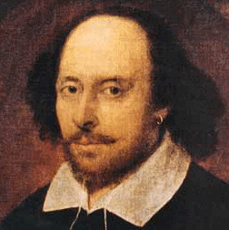

 |
|
The world's greatest writers and artists have flourished in the atmosphere of buoyancy, exhilaration and the freedom from economic cares engendered by profit inflations.
Keynes, happy himself to profit from speculation, did not attribute moral blame to profiteers. They were active entrepreneurs whose windfalls were consequence, not cause, of inflation. But whereas profiteers were depicted in those early post-war writings as becoming an unintentional threat to capitalism, the Treatise (1930) applauded their role in progress. Keynes wrote that 'the wealth of nations is enriched, not during income inflations but during profit inflations,' that is, 'when prices are running away from costs'. Keynes wrote of the great progress during 'the rise of European prices during the sixteenth and seventeenth centuries as a result of the flow of precious metals from America':
[T]he greater part of the fruits of the economic progress and capital accumulation of Elizabethan and Jacobean age accrued to the profiteer rather than to the wage earner. Never in the annals of the modern world has there existed so prolonged and so rich an opportunity for the business man, the speculator and the profiteer. In these golden years modern capitalism was born.
Citing the example of Shakespeare, who died rich, writing during this great profit inflation, Keynes wrote, only partly in jest: "I offer it as a thesis for examination by those who like rash generalizations, that by far the larger proportion of the world's greatest writers and artists have flourished in the atmosphere of buoyancy, exhilaration and the freedom from economic cares felt by the governing class, which is engendered by profit inflations.'
Keynes was keen to have historians give greater recognition to the effects of economic, especially monetary, factors in history. In particular, he stressed 'the extraordinary correspondence between the periods of profit inflation and of profit deflation respectively with those of national rise and decline.'
John Maynard Keynes and international relations: economic paths to war and peace By Donald Markwell